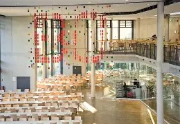

Willkommen zum Quiz!
Beantworten Sie die 10 Fragen zur gesunden Ernährung in Schulen. Dieses Quiz basiert auf Forschungsarbeiten unserer Hochschule zum Thema gesunde Verpflegung in Bildungseinrichtungen.

Gesunde Optionen in der Mensa
Praktische Ernährungsbildung